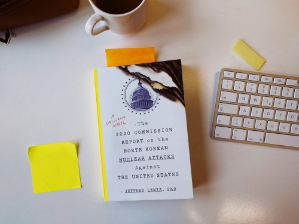

Ursprünglich wollte ich mir “The 2020 Report on the North Korean Nuclear Attacks on the United States” von Jeffrey Lewis für meinen Urlaub aufheben. Nachdem ich aber aus Neugier eigentlich nur die Einleitung lesen wollte, kam ich nicht mehr los. Das Buch beschreibt die fiktionalen Atomschläge Nordkoreas gegen Amerika, wie es zu diesen kam, sowie die Folgen.

Es ist ein gleichermaßen schockierend und faszinierendes Buch, welches nicht zuletzt auf die politischen Spannungen zwischen Nord- und Südkorea eingeht, die Rolle von Verschwörungstheorien, die chaotische Unfähigkeit der Trump-Regierung (Trumps Tweets spielen eine zentrale Rolle), sowie die Realität eines nuklearen Angriffs mit all seinen brutalen Facetten.
Es ist gruselige und gut recherchierte Spekulation, die an den berüchtigten Appendix C des 1978 veröffentlichten Reports der US-Regierung “The effects of nuclear war” erinnert. Ebenfalls ein spekulativer Artikel, der die Folgen eines fiktionalen nuklearen Angriffs beschrieb, den Film “The day after” inspirierte und in Folge President Reagan darin bestärkte nukleare Kriege mit allen Mitteln zu vermeiden. Gute, realistische Geschichten wirken.
Ich schreibe deswegen hier davon, weil ich glaube, dass spekulative Geschichten eine größere Rolle im Journalismus einnehmen sollten. Journalismus sollte nicht nur rückblickend Orientierung bieten, sondern auch vorausblickend Optionen und Möglichkeiten aufzeigen können. Projekte, wie Scout.ai, “Zukunftsreporter” der Riffreporter oder “World If” des Economist sind bereits jetzt gute Beispiele dafür.